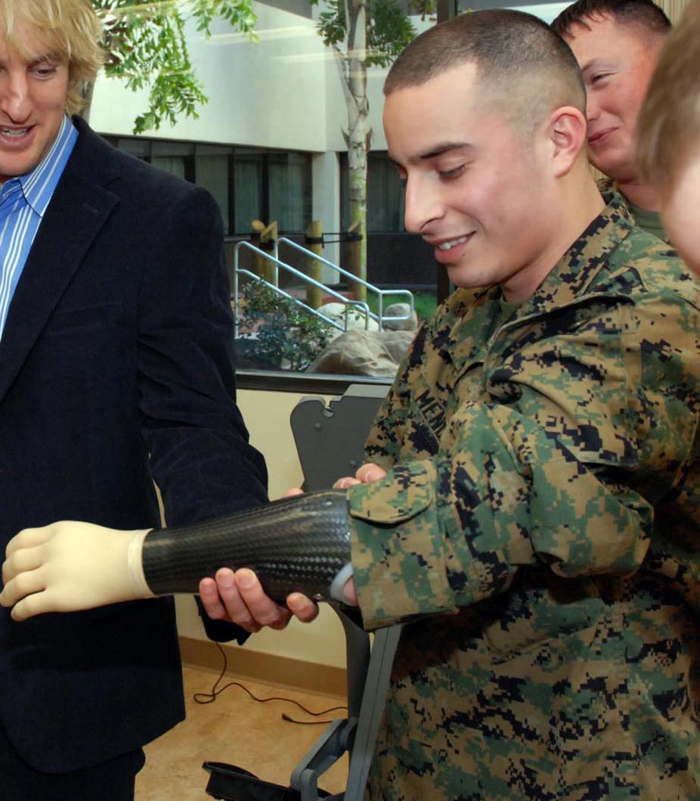

Bionic Limbs: Learning Human Movement
How modern prosthetic hands and legs use sensors and AI to follow the body
Think about picking up a thin plastic cup full of water. You do not have to calculate how wide to open your fingers or how hard to squeeze so the cup does not fold. Your brain and hand do it automatically. Building a mechanical limb that can do the same thing has been one of the hardest problems in engineering.
How a prosthetic hand reads muscles
When someone loses a hand, the muscles and nerves left in their forearm do not disappear. If the person thinks about closing their fist or pointing a finger, those forearm muscles still tighten slightly and create tiny electrical signals on the skin.
Electronic prosthetics (called myoelectric prosthetics) have small metal sensors inside the socket that sit against the skin and read those signals. For a long time, however, the control was very stiff: flex one muscle on the top of the arm to open the hand, flex another on the bottom to close it. If you wanted to switch from a flat pinch to a round grip, you often had to press a button with your other hand.

Teaching the hand to recognize grips
Newer bionic hands use machine learning instead of simple two-muscle switches. Instead of forcing the wearer to learn awkward muscle tricks, the software learns the person's own muscle patterns.
During setup, the user imagines doing different movements, such as pinching a key, holding a bottle or opening the palm flat, while several sensors record the forearm at the same time. The model learns the electrical pattern for each movement and tells the small motors in the fingers which grip to use.
A similar idea is used in bionic knees and ankles. Sensors inside the leg measure walking speed, knee angle and foot pressure dozens of times per second, so the joint stiffens automatically when walking down stairs and swings freely on flat ground.
Why many people still stop using them
Even with AI, bionic limbs are far from perfect in real life. During the day, a person's arm gets tired, skin sweats in warm weather, and the socket shifts slightly when carrying a heavy bag. All of these change the electrical signal on the skin and can make the hand misread a command at the wrong moment.
Most prosthetics also have no real sense of touch, so the user has to watch the hand closely to avoid dropping things. Because bionic arms are heavy and can cost tens of thousands of dollars, many amputees still prefer simpler, lighter mechanical hooks or passive hands for everyday chores.
Sources & Image Credits
- Image Credit: U.S. Navy photo of a myoelectric prosthetic arm (Public Domain, via Wikimedia Commons) - https://commons.wikimedia.org/wiki/File:Myoelectric_prosthetic_arm.jpg
- NIH / NIBIB - Rehabilitation Engineering: https://www.nibib.nih.gov/science-education/science-topics/rehabilitation-engineering
- World Health Organization (WHO) - Assistive Technology Fact Sheet: https://www.who.int/news-room/fact-sheets/detail/assistive-technology
- Wikipedia - Prosthesis: https://en.wikipedia.org/wiki/Prosthesis